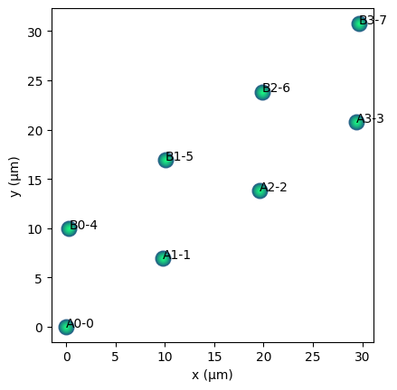
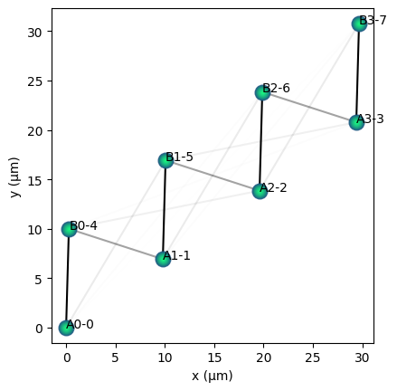
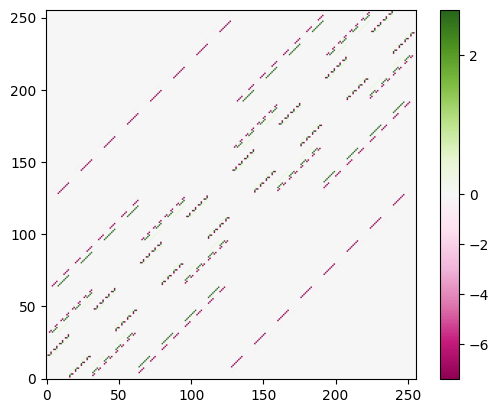

Simulating the SSH model#
Here we simulate the SSH model using the Pulser backend. We follow the work of De Léséleuc et al. in “Observation of a symmetry-protected topological phase of interacting bosons with Rydberg atoms” (available also on arxiv).
Using a Microwave channel, the interaction Hamiltonian is given by
where \(C_{ij} = \frac{C_3(1-3\cos^2\theta_{ij})}{R_{ij}^3}\). Here \(R_{ij}\) is the distance between qubits \(i\) and \(j\), \(R_{ij}=|\textbf{x}_i-\textbf{x}_j|\), and \(\theta_{ij}\) is the angle between \(\textbf{x}_i-\textbf{x}_j\) and the magnetic field. See the Pulser docs for more information.
By appropriate choice of the qubit geometry we can approximate the SSH model for hard bosons. For example, when $\( \theta_{ij} = \cos^{-1}\sqrt{1/3}\)$ there will be no interaction between qubits \(i\) and \(j\). We use this to model the SSH model below.
import qse
import numpy as np
import matplotlib.pyplot as plt
angle = np.arccos(np.sqrt(1.0 / 3.0)) * 180 / np.pi
print(f"Angle is: {angle:.2f} degrees")
Angle is: 54.74 degrees
We create two chains of qubits, A and B. By rotating them by the angle above, there will be no interactions between qubits on the same chain.
lattice_spacing = 12
repeats = 4
qbits1 = qse.lattices.chain(lattice_spacing=lattice_spacing, repeats=repeats)
qbits1.labels = [f"A{i}-{i}" for i in range(repeats)]
qbits1.add_dim() # Make 2D
qbits2 = qse.lattices.chain(lattice_spacing=lattice_spacing, repeats=repeats)
qbits2.labels = [f"B{i}-{i+repeats}" for i in range(repeats)]
qbits2.add_dim()
qbits2.translate((lattice_spacing * 0.5, 8))
qbits_ssh = qbits1 + qbits2
qbits_ssh.rotate(
90 - angle
) # by rotating to this angle interactions in the A & B chains will cancel.
qbits_ssh.draw(show_labels=True, units="µm")

We can verify that there are no interactions in the same chain by computing the couplings between qubits.
magnetic_field = np.array(
[0.0, 1.0, 0.0]
) # We need to define the field in 3D for the calculator.
c3 = 3700
def compute_hamilton_coef(i, j):
"""Compute the hamiltonian coefficient between qubits i & j."""
r = qbits_ssh.positions[i] - qbits_ssh.positions[j]
d = np.linalg.norm(r)
r /= d
cos_theta = np.dot(r, magnetic_field[:2])
return c3 * (1 - 3 * cos_theta**2) / d**3
couplings = [
[compute_hamilton_coef(i, j) for j in range(i + 1, qbits_ssh.nqbits)]
for i in range(qbits_ssh.nqbits - 1)
]
couplings = [j for i in couplings for j in i]
coupling_mat = np.zeros((qbits_ssh.nqbits, qbits_ssh.nqbits))
coupling_mat[np.triu_indices(qbits_ssh.nqbits, 1)] = couplings
couplings
for i in range(1, qbits_ssh.nqbits):
print(f"Coupling between qbits 0 & {i}:", coupling_mat[0, i])
Coupling between qbits 0 & 1: -4.754427304529029e-16
Coupling between qbits 0 & 2: -5.943034130661286e-17
Coupling between qbits 0 & 3: 0.0
Coupling between qbits 0 & 4: -7.391286573549234
Coupling between qbits 0 & 5: -0.5880494737584242
Coupling between qbits 0 & 6: -0.09525640675644509
Coupling between qbits 0 & 7: -0.026269374219942052
# Let's visualize the couplings
bonds = np.abs(coupling_mat)
bonds /= np.max(bonds)
qbits_ssh.draw(show_labels=True, units="µm")
for i in range(0, qbits_ssh.nqbits - 1):
for j in range(i + 1, qbits_ssh.nqbits):
xs_ij = qbits_ssh.positions[[i, j]]
plt.plot(xs_ij[:, 0], xs_ij[:, 1], c="k", alpha=bonds[i, j], zorder=-1)

Thus we see that there are no couplings between qubits in the same chain, and hence we have a SSH model. Finally we can visualize the Hamiltonian.
pcalc_ssh = qse.calc.Pulser(
qbits=qbits_ssh,
amplitude=qse.Signal([0.0], 10),
detuning=qse.Signal([0.0], 10),
channel="mw_global",
magnetic_field=magnetic_field,
)
pcalc_ssh.build_sequence()
pcalc_ssh.calculate()
10.0%. Run time: 0.00s. Est. time left: 00:00:00:00
20.0%. Run time: 0.00s. Est. time left: 00:00:00:00
30.0%. Run time: 0.00s. Est. time left: 00:00:00:00
40.0%. Run time: 0.00s. Est. time left: 00:00:00:00
50.0%. Run time: 0.00s. Est. time left: 00:00:00:00
60.0%. Run time: 0.00s. Est. time left: 00:00:00:00
70.0%. Run time: 0.00s. Est. time left: 00:00:00:00
80.0%. Run time: 0.00s. Est. time left: 00:00:00:00
90.0%. Run time: 0.00s. Est. time left: 00:00:00:00
100.0%. Run time: 0.00s. Est. time left: 00:00:00:00
Total run time: 0.01s
time in compute and simulation = 0.06652474403381348 s.
ham = pcalc_ssh.sim.get_hamiltonian(1).full()
fig = qse.vis.view_matrix(ham.real, vcenter=0.0)

Version#
qse.utils.print_environment()
Python version: 3.12.13
qse version: 1.1.10